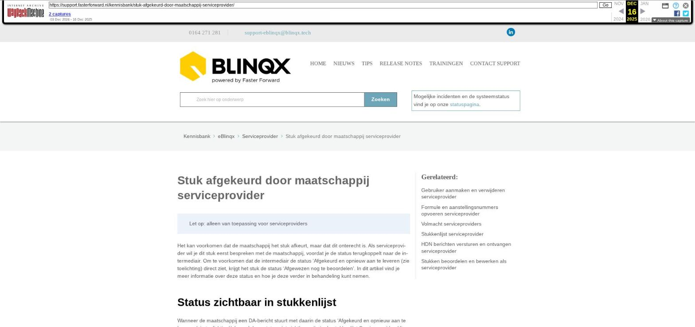

Stuk afgekeurd door maatschappij serviceprovider

Tekstinhoud
Stuk afgekeurd door maatschappij serviceprovider
Let op: alleen van toepassing voor serviceproviders
Het kan voorkomen dat de maatschappij het stuk afkeurt, maar dat dit onterecht is. Als serviceprovider wil je dit stuk eerst bespreken met de maatschappij, voordat je de status terugkoppelt naar de intermediair. Om te voorkomen dat de intermediair de status 'Afgekeurd en opnieuw aan te leveren (zie toelichting) direct ziet, krijgt het stuk de status 'Afgewezen nog te beoordelen'. In dit artikel vind je meer informatie over deze status en hoe je deze verder in behandeling kunt nemen.
Status zichtbaar in stukkenlijst
Wanneer de maatschappij een DA-bericht stuurt met daarin de status 'Afgekeurd en opnieuw aan te leveren (zie toelichting)' dan zal deze status niet zichtbaar zijn in de stukkenlijst Serviceprovider. Hier komt bij de beoordeling maatschappij de status 'Afgewezen nog te beoordelen' te staan. Zodra je met de muis op de status gaat staan, zie je de toelichting van de maatschappij.
In de stukkenlijst van de intermediair wordt deze status niet zichtbaar, want hier behoudt het stuk de huidige status. De status wordt niet overschreven. Wanneer er een DA-bericht naar de intermediair wordt gestuurd dan zal de huidige status die staat in de kolom beoordeling maatschappij worden meegestuurd als documentstatus van de maatschappij en niet de status 'Afgewezen nog te beoordelen'.
Het afgekeurde stuk verwerken
Het stuk kan terecht of onterecht afgekeurd zijn. Als blijkt dat het stuk onterecht is afgekeurd dan stuurt de maatschappij een nieuw DA-bericht met daarin de juiste status. Het stuk krijgt dan in zowel de stukkenlijst serviceprovider als de stukkenlijst intermediair deze status.
Wanneer het stuk terecht is afgekeurd dan wil je dat het stuk alsnog de status 'Afgekeurd en opnieuw aan te leveren (zie toelichting)' krijgt. Dit doe je door op de status 'Afgewezen nog te beoordelen' in de kolom Beoordeling MIJ te klikken. Je komt dan in het scherm 'Beoordelen afkeuring door maatschappij'.
Hier zie je de toelichting waarom het stuk is afgekeurd door de maatschappij. Daarnaast heb je de knop om het stuk af te keuren. Door hierop te klikken keur je het stuk af. Er verschijnt een pop-up waarin de originele toelichting van de maatschappij wordt getoond. Deze kan je eventueel aanpassen. Vervolgens kan je het afkeuren bevestigen. De status van beoordeling maatschappij en serviceprovider komt te staan op 'Afgekeurd en opnieuw aan te leveren (zie toelichting)'. Het statusmoment van de beoordeling serviceprovider is het moment van bevestigen. Het statusmoment van de beoordeling maatschappij is deze uit het DA-bericht.
Stuk historie
Het daadwerkelijk afkeuren van het stuk komt onder stuk historie te staan. De datum en tijd die hierbij staan is het moment dat de gebruiker op de knop heeft gedrukt om het afkeuren te bevestigen.
Laatste update: 21 oktober 2025
Was deze informatie nuttig?
Ja Nee